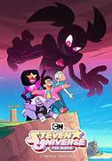

Hola, en este apartado hablaremos sobre la recepcion Critica de Steven Universe

Resepcion Critica
Criticas:
Temas Profundos y Mensajes Positivos: La serie ha sido elogiada por su capacidad para
abordar temas profundos y emocionales de manera accesible para un público diverso. Los
críticos han elogiado sus mensajes positivos sobre la autoaceptación, la diversidad,
la amistad y la superación personal.
Desarrollo de Personajes: El desarrollo de los personajes en "Steven Universe" ha
sido ampliamente elogiado, destacando la complejidad y la evolución de cada personaje
a lo largo de la serie. La exploración de sus trasfondos y motivaciones ha sido
especialmente valorada.
Estilo Visual y Narrativo: Tanto el estilo visual único de la serie, con diseños de
personajes distintivos y escenarios coloridos, como su narrativa combinada de episodios
autocontenidos y tramas serializadas, han sido bien recibidos por la crítica.
Representación LGBTQ+: "Steven Universe" ha sido elogiada por su representación
positiva y auténtica de personajes LGBTQ+, incluyendo relaciones románticas y familiares,
lo que ha sido visto como un paso significativo en la inclusión y la diversidad en la
animación.
Impacto Cultural: La serie ha tenido un impacto cultural significativo, generando una
base de fans apasionada y siendo reconocida por su influencia en la industria de la
animación, especialmente en términos de representación y narrativa inclusiva.